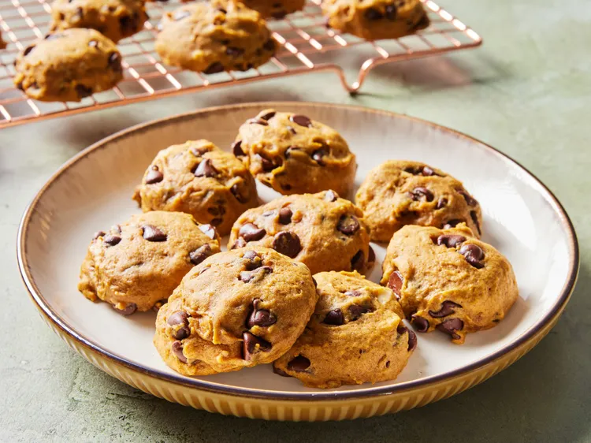

Pumpkin Cookie Dish

Description
Do you like cookies? Do you like pumpkin? Do you like the thought of pumpkin pie but dont want
the commitment of it all? Do I have the dish for you, an easy to make pumpkin infused cookie loaf.
Ingredients
- Betty Crocker Zero Sugar Chocolate Chip Cookie Mix
- can of pumpkin pie mix
- pumpkin pie spices
- (optional) nuts (pecans, walnuts)
Steps
- put the cookie mix into a big bowl
- put the pumpkin pie mix into the same bowl
- add some of the spice now if you'd like
- stir to combine until everything is incorporated
- you can make a loaf or roll out balls and make cookies
- either way put in an oven at like 350 and bake for 40 (or 15 minutes if cookie)
- if its a loaf stick a toothpick in the middle and make sure it comes out clean
- if it does put it on a wire rack to cool down
Home